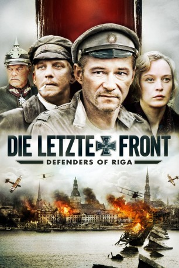

#8516 Die Letzte Front - Defenders of Riga
 
 IMDB-Wertung: 7.0 / 10
IMDB-Wertung: 7.0 / 10  Metascore: 0
Metascore: 0 
Im November 1919 marschiert die deutsche Eiserne Division mit 50.000 Mann vor den Toren Rigas auf. Deren Kommandeur General von der Goltz hat das Ende des ersten Weltkrieges nicht akzeptiert und will das Baltenland wieder unter deutsche Kontrolle bringen. Aus Angst vor einem Flächenbrand zögern die Alliierten, der jungen Nation Lettland beizustehen. Veteran Martin ist gerade erst von der Ostfront zurückgekehrt und auf dem Weg zu seiner Hochzeit. Gegen den Willen seiner Braut Elsa entscheidet er sich, den Widerstand der Hauptstadt zu organisieren. Doch können die einfachen Bürger der übermächtigen Bedrohung trotzen und den Untergang ihres Heimatlandes verhindern? Eine erbitterte Schlacht beginnt...
Jahr: 2007
Dauer: 123 Minuten
FSK: 16
Land: Lettland Studio: Beta FilmTonspuren:
Untertitel: Deutsch,
Auflösung: 720p (1280x536) Größe: 3727 MB
Genre: Action, Drama, Krieg, Geschichte
Regisseur: Aigars Grauba
Drehbuch: Ian Truitner
Soundtrack: Aigars Grauba
Darsteller:
- Uldis Dumpis als Priest
 Benjamin Nathan-Serio als Ernests Savickis
Benjamin Nathan-Serio als Ernests Savickis- Janis Reinis als Martin
- Elita Klavina als Elza
- Girts Krumins als Pavel Bermont
- Romualds Ancans als General Golc
- Girts Kesteris als Arnolds
- Andris Keiss als Ernests Savickis
- Vilis Daudzins als Paulis
- Arturs Skrastins als Jekabs
- Kestutis Stasys Jakstas als President Karlis Ulmanis
- Uldis Anze als
- Enriko Avots als Postman
- Juris Bartkevics als
- Indra Brike als Countess
- Paul Butkevich als
- Gatis Cirulis als German soldier
- Matiss Daudzins als Karlis
- Peteris Gaudins als Major Bishof
- Sigita Jevglevska als Mara
- Aivars Kalnarajs als
- Juris Kalnins als
- Elita Klavina-Jacob als
- Leonarda Klavina-Kestere als Anna
- Peteris Krilovs als
- Normunds Laizans als One-Eyed German soldier
- Talivaldis Lasmanis als
- Ziedonis Lochmelis als German soldier
- Agris Masens als Augusts Savickis
- Uldis Norenbergs als
- Guntis Pilsums als
- Ivars Puga als
- Ilze Pukinska als
- Juris Rijnieks als
- Arurs Skrastins als
- Inara Slucka als Justine
- Imants Strads als
- Dainis Sumiskis als
- Imants Vekmanis als
- Martins Vilsons als
Datei: X:\2007(G-M)\Letzte Front - Defenders of Riga, Die (2007, FSK16, 1280x536).mkv seit 12.03.2018
Festplatte: HD 2007(A-Z)-2008(A-F)
 Es gibt insgesamt 64 Filme in der Gruppe '2007(G-M)'
Es gibt insgesamt 64 Filme in der Gruppe '2007(G-M)'